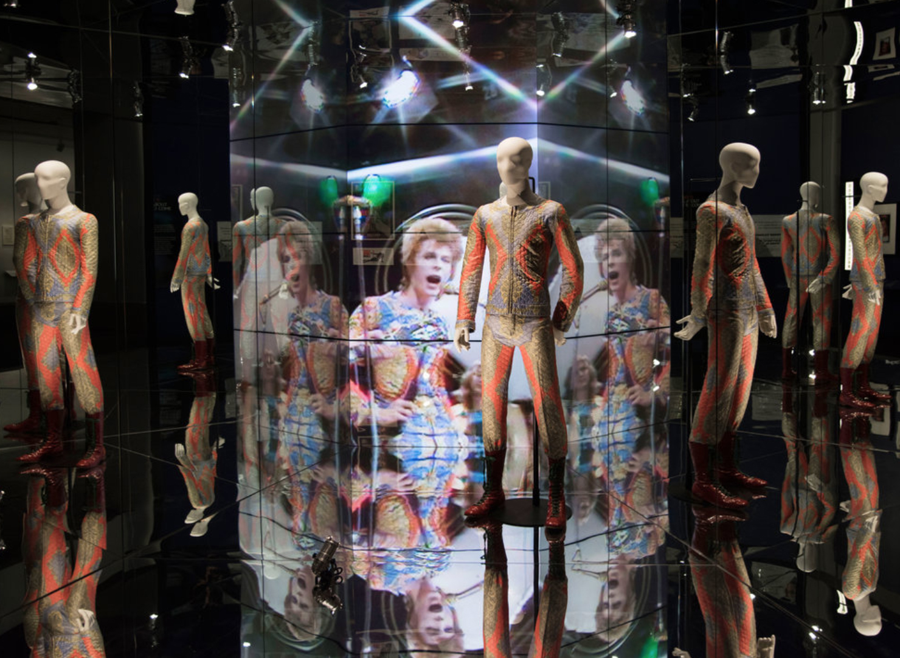

David Bowie Is, currently on view at the Brooklyn Museum, is an incredibly wide-ranging, relentlessly thorough showcase of Bowie's life, music, style, and influences, with an impeccable level of detail which may to lead to surprises for even the most dedicated of fans. The exhibition, which originated at the Victoria and Albert Museum in London five years ago and has since toured the world, takes on a certain heartbreaking resonance here, a reminder of what we've lost since the musician's passing in 2016. He was just the fucking best! The exhibition features Bowie's famed outfits, including Kansai Yamamoto's "Tokyo Pop" suit, Freddie Burretti's Ziggy Stardust getups, and the Thin White Duke look; video and audio recordings of Bowie and his collaborators discussing his creative process; props, including the giant penis he flashed on SNL; and numerous clips of performances (like his legendary 1970s Top of the Pops appearances); his paintings and sketches; and of course music videos (including a personal favorite, "Boys Keep Swinging," directed by David Mallett). Curator Geoffrey Marsh also did a remarkable job of incorporating Bowie's myriad of influences, ranging from Japanese kabuki theater to German expression to Tibetan Buddhism to the works of Andy Warhol (there's video of their famously awkward 1971 meeting). The exhibition is claustrophobically crowded and takes about two hours to get through — but tickets are so, so worth it. The video of a 17-year-old Davy Jones discussing his founding of "The Society for the Prevention of Cruelty to Men with Long Hair" alone is worth the price of admission. Many of Bowie's personal effects are nestled amongst the vintage tour advertisements and platform shoes. They provide even deeper insight into the artist — his taste, his sense of humor, his outrageous love of mime. Below are a few of our favorites.
Swag
Bowie loved Little Richard, treasuring the photo he kept as a boy. In a recent interview with the New York Times, legendary Chic guitarist and record producer Nile Rodgers said images of Little Richard provided inspiration for Last Dance, Bowie's most commercially successful album. "Now Nile," Bowie told Rodgers. "That's rock n' roll."
In 1976, when Bowie headed to New Mexico to film The Man Who Fell to Earth, he insisted upon taking his personal library with him, which consisted of more than 400 books. He packed them in flight cases normally used for costumes and amplifiers. His taste was, of course, impeccable, and absurdly wide-ranging; books on display at the Brooklyn Museum include R.D. Laing's The Divided Self, James Baldwin's The Fire Next Time, Susan Jacoby's The Age of American Unreason, Peter Guralnick's Sweet Soul Music, Anthony Burgess' A Clockwork Orange, the complete works of Dorothy Parker, John Cage's Silence, and Yukio Mishima's The Sailor Who Fell from Grace with the Sea. The beginning of the exhibition, which focuses on Bowie's childhood and early career, includes a charming recording where he talks about buying pretentious books as a teenager so that people would see him reading them on the bus. "They probably went over my head," he laughs. "But over time, it sinks in." It's good advice for all. Starting a David Bowie book club might be wise.
The exhibition incorporates a number of Bowie's handwritten lyrics for classic songs including "Life On Mars?," "Station to Station," and "Heroes." Notes for "Life on Mars?" include the fact that Bowie wrote the song in just one day, and that it was "inspired by Frankie."

Getting to see Bowie's actual diary feels like an insane dream that seems too good to be true. In one entry, he describes writing "Fame," in 1975. "There was no fire, but Iggy [Pop]'s into it," he wrote. "He sought it like crazy. Delightful." Iggy was, of course, right; "Fame," co-written with John Lennon and Carlos Alomar, remains one of the most popular and iconic Bowie tracks of all time.
The old keys to Bowie and Iggy's place at 155 Haupstrasse in Berlin's Schöneberg neighborhood are casually tacked on a wall. Bowie moved to Berlin in 1976 to escape an escalating cocaine addiction in Los Angeles, and his time there lead to a particularly fecund creative period for both rock stars; in this time Iggy wrote (and Bowie engineered) his classic albums The Idiot and Lust for Life, and between 1976 and 1979 Bowie collaborated with Tony Visconti and Brian Eno on his Berlin trilogy of records: Low, Heroes, and Lodger.
David Bowie Is, by design, features little of Iman, to whom the musician was married from 1992 until his death in January 2016. But there is a Warhol-inspired lithograph that Bowie created of the supermodel, which may or may not have made us cry. Bowie reportedly once said that "You would think that a rock star being married to a supermodel would be one of the greatest things in the world. It is."
The exhibition is peppered with little treasures from fellow cultural luminaries, including a framed note from Christopher Isherwood and a 1974 drawing by John Lennon, titled, "For Video Dave, w/ Love, John L."
There are a few handwritten pages in which Bowie describes the arc of his most beloved alter ego, Ziggy Stardust. "Now he was a bum + knowing the boys with him + knowing his was against the system," it begins. "And he shined + the adulation + money + respect come." It closes, cryptically and somewhat poetically, with "the new sensation comes."

Born David Jones, Bowie changed his name in 1965; there was already a musical Davy Jones, the lead singer of The Monkees. The museum notes that he took the name from the frontiersman Jim Bowie, who invented the double-edged Bowie knife. Sharp.